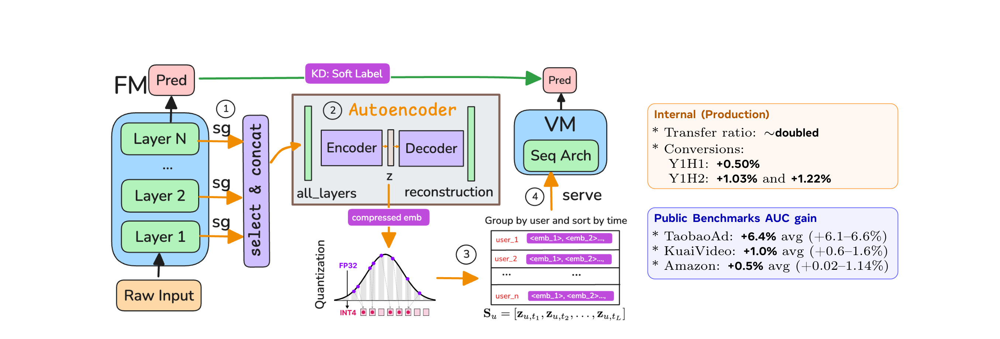
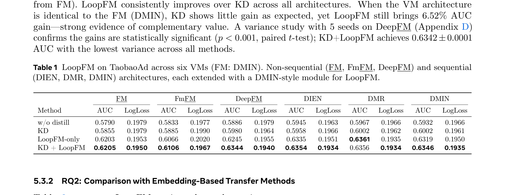
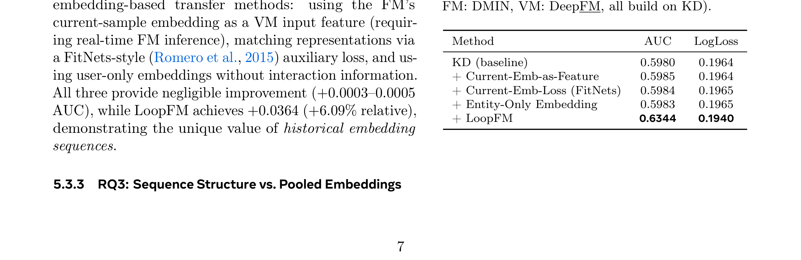
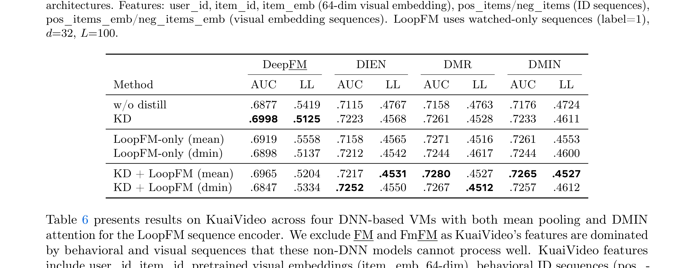
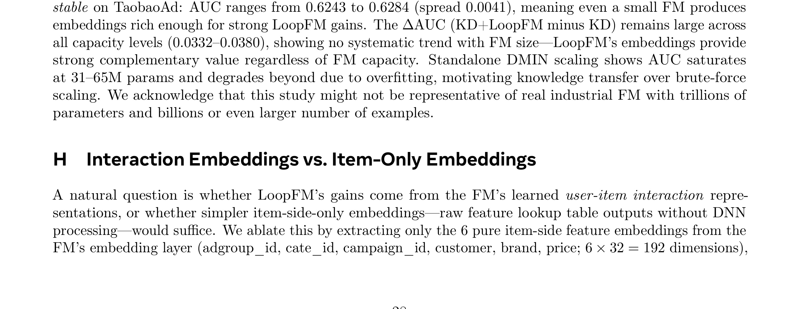

LoopFM: Learning frOm HistOrical RePresentations of Foundation Model for Recommendation 精读笔记
这篇论文讨论的是 从基础模型历史表征学习推荐模型。作者为 Shali Jiang, Hua Zheng, Boyang Liu, Laming Chen, Kenny Lov, Chuanqi Xu, Lisang Ding 等；一作主机构口径：AI at Meta。论文入口：arXiv:2605.29280。公开日期为 2026-05-28，来源为 arXiv v1 / cs.LG/cs.IR。代码/项目页状态：未核验到独立公开代码仓库；论文包含公开数据集实验和 Meta 生产系统结果。 主类别：推荐算法；次级标签：Foundation model、工业推荐蒸馏、历史表征、转移率。
1. 背景和问题
补充背景 1：LoopFM 需要放在近期论文池的共同变化里理解。过去一周的候选不再只展示更大的模型或更长的上下文，而是在追问 历史 embedding、压缩、结构化、transfer ratio 这些中间变量怎样被量化、怎样被训练、怎样进入服务路径。这个角度对读者很重要，因为推荐系统和大模型的实际收益往往不是由一个最终分数决定，而是由数据接口、缓存策略、评测分桶和失败回滚共同决定。推荐 foundation model 表征迁移 在这里承担的是一个可复核样本：它把原先会被平均指标吞掉的细节放到实验中心。
补充背景 2：LoopFM 需要放在近期论文池的共同变化里理解。过去一周的候选不再只展示更大的模型或更长的上下文，而是在追问 历史 embedding、压缩、结构化、transfer ratio 这些中间变量怎样被量化、怎样被训练、怎样进入服务路径。这个角度对读者很重要，因为推荐系统和大模型的实际收益往往不是由一个最终分数决定，而是由数据接口、缓存策略、评测分桶和失败回滚共同决定。推荐 foundation model 表征迁移 在这里承担的是一个可复核样本：它把原先会被平均指标吞掉的细节放到实验中心。
补充背景 3：LoopFM 需要放在近期论文池的共同变化里理解。过去一周的候选不再只展示更大的模型或更长的上下文，而是在追问 历史 embedding、压缩、结构化、transfer ratio 这些中间变量怎样被量化、怎样被训练、怎样进入服务路径。这个角度对读者很重要，因为推荐系统和大模型的实际收益往往不是由一个最终分数决定，而是由数据接口、缓存策略、评测分桶和失败回滚共同决定。推荐 foundation model 表征迁移 在这里承担的是一个可复核样本：它把原先会被平均指标吞掉的细节放到实验中心。
补充背景 4：LoopFM 需要放在近期论文池的共同变化里理解。过去一周的候选不再只展示更大的模型或更长的上下文，而是在追问 历史 embedding、压缩、结构化、transfer ratio 这些中间变量怎样被量化、怎样被训练、怎样进入服务路径。这个角度对读者很重要，因为推荐系统和大模型的实际收益往往不是由一个最终分数决定，而是由数据接口、缓存策略、评测分桶和失败回滚共同决定。推荐 foundation model 表征迁移 在这里承担的是一个可复核样本：它把原先会被平均指标吞掉的细节放到实验中心。
补充背景 5：LoopFM 需要放在近期论文池的共同变化里理解。过去一周的候选不再只展示更大的模型或更长的上下文，而是在追问 历史 embedding、压缩、结构化、transfer ratio 这些中间变量怎样被量化、怎样被训练、怎样进入服务路径。这个角度对读者很重要，因为推荐系统和大模型的实际收益往往不是由一个最终分数决定，而是由数据接口、缓存策略、评测分桶和失败回滚共同决定。推荐 foundation model 表征迁移 在这里承担的是一个可复核样本：它把原先会被平均指标吞掉的细节放到实验中心。
LoopFM 的问题起点是：大 teacher 给小 student 一个 soft label 时，大量跨域特征和中间交互被压成单数，teacher 越大，student 能吃到的 improvement fraction 反而可能下降。 这类问题在近期论文池里反复出现，说明推荐系统和大模型都开始从单点模型精度转向对中间状态、训练信号和系统接口的治理。今天把它列入精选，不是因为标题里有热门词，而是因为它把一个容易被平均指标掩盖的环节重新拆开，并给出可复核的实验或系统设计。
它值得看的原因可以用一句话概括：它把大推荐 foundation model 的中间 embedding 物化成垂直模型输入特征，绕开单标量 KD 的带宽瓶颈，并在工业系统里报告转移率和转化收益。 如果只读摘要，容易把这篇论文归入已有路线；但从工程角度看，作者关心的是怎样让该路线在真实系统里可测、可控、可迁移。这样的论文通常比单纯刷新 leaderboard 更适合每日沉淀，因为它能改变后续读论文时的检查清单。
从大模型方向看，LoopFM 关联的是训练后治理、记忆、检索、评价或旁路预测这些“主模型之外”的能力。现代 LLM 系统已经很少是一个模型独立完成任务，RAG、Agent memory、verifier、feature service 和 offline teacher 都会改变最终输出。论文把这些外围组件当成主要研究对象，因此对实际应用比表面任务更重要。
从推荐系统方向看，LoopFM 的意义在于提醒我们不要把推荐链路简化成一个分数。召回、排序、重排、广告候选、用户历史和长期偏好都可能需要不同的监督强度和不同的服务成本。论文提供的机制可以帮助判断哪些能力应在线调用，哪些应离线蒸馏，哪些应转成特征或评测协议。
本轮阅读只使用 arXiv 摘要页、PDF 正文和 PDF 中可见链接作为事实源。具体数值若没有逐项表格复核，后文只按论文报告的相对结论描述，不把未核验数字扩写成业务事实。这条线对推荐系统工程的价值，更多体现在把大模型能力拆成可缓存、可蒸馏、可旁路接入的资产，而不是把大模型直接放到高 QPS 主链路。 这也是今天筛选时优先保留它的原因。
2. 方法
方法加深 1：LoopFM 在复现时还需要把 推荐 foundation model 表征迁移 拆成日志字段和训练批次两个层面。日志字段决定我们能否观察到论文中的中间变量，例如置信度、历史表征、诊断位置或候选实体碰撞；训练批次决定这些变量是否以正确分布进入优化。如果字段定义不稳定，模型可能在离线指标上学习到短期捷径；如果批次构造和线上请求差异太大，论文里的模块即使数学上成立，也会在 serving 阶段变成不可解释噪声。因此我会把数据生成、损失权重、在线使用点和失败回滚四件事绑定检查，而不是只检查模型代码是否能跑通。
方法加深 2：LoopFM 在复现时还需要把 推荐 foundation model 表征迁移 拆成日志字段和训练批次两个层面。日志字段决定我们能否观察到论文中的中间变量，例如置信度、历史表征、诊断位置或候选实体碰撞；训练批次决定这些变量是否以正确分布进入优化。如果字段定义不稳定，模型可能在离线指标上学习到短期捷径；如果批次构造和线上请求差异太大，论文里的模块即使数学上成立，也会在 serving 阶段变成不可解释噪声。因此我会把数据生成、损失权重、在线使用点和失败回滚四件事绑定检查，而不是只检查模型代码是否能跑通。
方法加深 3：LoopFM 在复现时还需要把 推荐 foundation model 表征迁移 拆成日志字段和训练批次两个层面。日志字段决定我们能否观察到论文中的中间变量，例如置信度、历史表征、诊断位置或候选实体碰撞；训练批次决定这些变量是否以正确分布进入优化。如果字段定义不稳定，模型可能在离线指标上学习到短期捷径；如果批次构造和线上请求差异太大，论文里的模块即使数学上成立，也会在 serving 阶段变成不可解释噪声。因此我会把数据生成、损失权重、在线使用点和失败回滚四件事绑定检查，而不是只检查模型代码是否能跑通。
方法加深 4：LoopFM 在复现时还需要把 推荐 foundation model 表征迁移 拆成日志字段和训练批次两个层面。日志字段决定我们能否观察到论文中的中间变量，例如置信度、历史表征、诊断位置或候选实体碰撞；训练批次决定这些变量是否以正确分布进入优化。如果字段定义不稳定，模型可能在离线指标上学习到短期捷径；如果批次构造和线上请求差异太大，论文里的模块即使数学上成立，也会在 serving 阶段变成不可解释噪声。因此我会把数据生成、损失权重、在线使用点和失败回滚四件事绑定检查，而不是只检查模型代码是否能跑通。
方法补充 1：阅读 LoopFM 时，我会把 历史 embedding、压缩、结构化、transfer ratio 当作一组连续接口，而不是互不相干的技巧。第一个检查点是数据是否足够稳定：如果输入来自曝光日志、用户历史、检索结果或模型中间层，那么采样策略会直接决定训练信号。第二个检查点是目标是否可校准：如果模型只优化最终标签，就很难解释错误来自哪里；如果论文同时记录中间变量，就可以把收益拆到模块级。第三个检查点是服务成本：训练期可用的 teacher、future trajectory 或评测协议，未必能进入线上主链路，因此必须看作者是否提供了离线化、缓存化或旁路接入路径。
方法补充 2：阅读 LoopFM 时，我会把 历史 embedding、压缩、结构化、transfer ratio 当作一组连续接口，而不是互不相干的技巧。第一个检查点是数据是否足够稳定：如果输入来自曝光日志、用户历史、检索结果或模型中间层，那么采样策略会直接决定训练信号。第二个检查点是目标是否可校准：如果模型只优化最终标签，就很难解释错误来自哪里；如果论文同时记录中间变量，就可以把收益拆到模块级。第三个检查点是服务成本：训练期可用的 teacher、future trajectory 或评测协议，未必能进入线上主链路，因此必须看作者是否提供了离线化、缓存化或旁路接入路径。
方法补充 3：阅读 LoopFM 时，我会把 历史 embedding、压缩、结构化、transfer ratio 当作一组连续接口，而不是互不相干的技巧。第一个检查点是数据是否足够稳定：如果输入来自曝光日志、用户历史、检索结果或模型中间层，那么采样策略会直接决定训练信号。第二个检查点是目标是否可校准：如果模型只优化最终标签，就很难解释错误来自哪里；如果论文同时记录中间变量，就可以把收益拆到模块级。第三个检查点是服务成本：训练期可用的 teacher、future trajectory 或评测协议，未必能进入线上主链路，因此必须看作者是否提供了离线化、缓存化或旁路接入路径。
方法补充 4：阅读 LoopFM 时，我会把 历史 embedding、压缩、结构化、transfer ratio 当作一组连续接口，而不是互不相干的技巧。第一个检查点是数据是否足够稳定：如果输入来自曝光日志、用户历史、检索结果或模型中间层，那么采样策略会直接决定训练信号。第二个检查点是目标是否可校准：如果模型只优化最终标签，就很难解释错误来自哪里；如果论文同时记录中间变量，就可以把收益拆到模块级。第三个检查点是服务成本：训练期可用的 teacher、future trajectory 或评测协议，未必能进入线上主链路，因此必须看作者是否提供了离线化、缓存化或旁路接入路径。
方法补充 5：阅读 LoopFM 时，我会把 历史 embedding、压缩、结构化、transfer ratio 当作一组连续接口，而不是互不相干的技巧。第一个检查点是数据是否足够稳定：如果输入来自曝光日志、用户历史、检索结果或模型中间层，那么采样策略会直接决定训练信号。第二个检查点是目标是否可校准：如果模型只优化最终标签，就很难解释错误来自哪里；如果论文同时记录中间变量，就可以把收益拆到模块级。第三个检查点是服务成本：训练期可用的 teacher、future trajectory 或评测协议，未必能进入线上主链路，因此必须看作者是否提供了离线化、缓存化或旁路接入路径。
方法补充 6：阅读 LoopFM 时，我会把 历史 embedding、压缩、结构化、transfer ratio 当作一组连续接口，而不是互不相干的技巧。第一个检查点是数据是否足够稳定：如果输入来自曝光日志、用户历史、检索结果或模型中间层，那么采样策略会直接决定训练信号。第二个检查点是目标是否可校准：如果模型只优化最终标签，就很难解释错误来自哪里；如果论文同时记录中间变量，就可以把收益拆到模块级。第三个检查点是服务成本：训练期可用的 teacher、future trajectory 或评测协议，未必能进入线上主链路，因此必须看作者是否提供了离线化、缓存化或旁路接入路径。
方法部分按论文原始思路拆成 4 个模块。为了避免把论文读成一个新名词，下面每个模块都说明输入、输出、训练或推理时的位置，以及它怎样缓解前文的问题。LoopFM 的方法不应只看最终指标，必须把数据、损失、服务路径和评测假设放在一起读。
2.1 FM 历史 embedding extraction：离线抽取而非在线调用
FM 历史 embedding extraction：离线抽取而非在线调用 是论文方法链条中的第 1 个关键环节。它的输入来自前一阶段定义的用户上下文、模型状态、候选集合或训练样本，输出则会继续影响后续优化和评测。这里最重要的不是模块名称，而是接口：如果输入里包含有偏曝光、过期知识或未校准置信度，后续模块即使形式上复杂，也可能只是在放大旧问题。
训练视角下，FM 历史 embedding extraction：离线抽取而非在线调用 需要把原始信号转成可学习对象。对 LoopFM 来说，作者没有满足于最终分数，而是显式控制了该模块需要学习的中间变量：可能是 rank、历史表征、future step、diagnostic field、entity collision degree，或 advertiser prediction prior。这让实验能回答“收益来自哪里”，而不是只回答“模型有没有更高”。
推理或服务视角下，FM 历史 embedding extraction：离线抽取而非在线调用 的代价同样需要单独看。有些组件只存在于训练期，可以承受较高成本；有些组件会进入在线路径，就必须面对延迟、缓存、增量更新和异常回退。论文的工程价值，正在于它尽量把高成本推理转成离线表征、训练奖励、评测协议或轻量旁路特征，使系统可以先小范围接入再扩大。

Figure 1 说明 LoopFM 的关键不是又加一个 teacher，而是打开 teacher 到 student 的信息带宽。Figure 1 LoopFM overview. Left: KD transfers via a soft label (top). LoopFM adds a high-bandwidth embedding 图表中的信息要和 transfer ratio 一起理解：soft label KD 只传一个标量，历史 FM 表征则把跨域交互和中间状态变成序列特征。对工业推荐来说，最重要的是这些表征离线抽取、压缩、结构化后可以被 VM 服务，不需要在线调用 trillion-parameter FM；因此收益要同时看 AUC/NE、存储、刷新频率和线上转化。
这个模块的边界也很清楚。FM 历史 embedding extraction：离线抽取而非在线调用 如果被孤立使用，可能只是一项局部技巧；只有和后续模块结合，才能形成论文声称的整体收益。阅读 LoopFM 时，我会特别检查它是否依赖不可公开的数据、是否要求昂贵 teacher、是否改变线上 serving path，以及失败时能否被监控。这些问题决定了它是否能从论文实验迁移到真实系统。
2.2 compression：把高维中间表征压缩成可服务特征
compression：把高维中间表征压缩成可服务特征 是论文方法链条中的第 2 个关键环节。它的输入来自前一阶段定义的用户上下文、模型状态、候选集合或训练样本，输出则会继续影响后续优化和评测。这里最重要的不是模块名称，而是接口：如果输入里包含有偏曝光、过期知识或未校准置信度，后续模块即使形式上复杂，也可能只是在放大旧问题。
训练视角下，compression：把高维中间表征压缩成可服务特征 需要把原始信号转成可学习对象。对 LoopFM 来说，作者没有满足于最终分数，而是显式控制了该模块需要学习的中间变量：可能是 rank、历史表征、future step、diagnostic field、entity collision degree，或 advertiser prediction prior。这让实验能回答“收益来自哪里”，而不是只回答“模型有没有更高”。
推理或服务视角下，compression：把高维中间表征压缩成可服务特征 的代价同样需要单独看。有些组件只存在于训练期，可以承受较高成本；有些组件会进入在线路径，就必须面对延迟、缓存、增量更新和异常回退。论文的工程价值，正在于它尽量把高成本推理转成离线表征、训练奖励、评测协议或轻量旁路特征，使系统可以先小范围接入再扩大。
与“转移率”相关的核心关系可以写成：
符号解释：\Delta NE_VM 是垂直模型相对基线的 normalized entropy 改善，\Delta NE_FM 是 foundation model 自身改善。 这个公式在笔记中承担的是接口说明作用：它把论文中的自然语言主张变成可检查变量。复现时应先确认这些变量是否能从自己的数据或日志里稳定得到，再考虑照搬模型结构。
与“LoopFM 输入”相关的核心关系可以写成：
符号解释：H_u 是按用户键聚合的历史 FM 表征序列，h_{u,t} 来自离线抽取和压缩后的 FM 中间 embedding。 这个公式在笔记中承担的是接口说明作用：它把论文中的自然语言主张变成可检查变量。复现时应先确认这些变量是否能从自己的数据或日志里稳定得到，再考虑照搬模型结构。
这个模块的边界也很清楚。compression：把高维中间表征压缩成可服务特征 如果被孤立使用，可能只是一项局部技巧；只有和后续模块结合，才能形成论文声称的整体收益。阅读 LoopFM 时，我会特别检查它是否依赖不可公开的数据、是否要求昂贵 teacher、是否改变线上 serving path，以及失败时能否被监控。这些问题决定了它是否能从论文实验迁移到真实系统。
2.3 structuring：按 user/item key 组成序列或图输入 VM
structuring：按 user/item key 组成序列或图输入 VM 是论文方法链条中的第 3 个关键环节。它的输入来自前一阶段定义的用户上下文、模型状态、候选集合或训练样本，输出则会继续影响后续优化和评测。这里最重要的不是模块名称，而是接口：如果输入里包含有偏曝光、过期知识或未校准置信度，后续模块即使形式上复杂，也可能只是在放大旧问题。
训练视角下，structuring：按 user/item key 组成序列或图输入 VM 需要把原始信号转成可学习对象。对 LoopFM 来说，作者没有满足于最终分数，而是显式控制了该模块需要学习的中间变量：可能是 rank、历史表征、future step、diagnostic field、entity collision degree，或 advertiser prediction prior。这让实验能回答“收益来自哪里”，而不是只回答“模型有没有更高”。
推理或服务视角下，structuring：按 user/item key 组成序列或图输入 VM 的代价同样需要单独看。有些组件只存在于训练期，可以承受较高成本；有些组件会进入在线路径，就必须面对延迟、缓存、增量更新和异常回退。论文的工程价值，正在于它尽量把高成本推理转成离线表征、训练奖励、评测协议或轻量旁路特征，使系统可以先小范围接入再扩大。
这个模块的边界也很清楚。structuring：按 user/item key 组成序列或图输入 VM 如果被孤立使用，可能只是一项局部技巧；只有和后续模块结合，才能形成论文声称的整体收益。阅读 LoopFM 时，我会特别检查它是否依赖不可公开的数据、是否要求昂贵 teacher、是否改变线上 serving path，以及失败时能否被监控。这些问题决定了它是否能从论文实验迁移到真实系统。
2.4 transfer-ratio decomposition：解释 LoopFM 与 KD 的互补收益
transfer-ratio decomposition：解释 LoopFM 与 KD 的互补收益 是论文方法链条中的第 4 个关键环节。它的输入来自前一阶段定义的用户上下文、模型状态、候选集合或训练样本，输出则会继续影响后续优化和评测。这里最重要的不是模块名称，而是接口：如果输入里包含有偏曝光、过期知识或未校准置信度，后续模块即使形式上复杂，也可能只是在放大旧问题。
训练视角下，transfer-ratio decomposition：解释 LoopFM 与 KD 的互补收益 需要把原始信号转成可学习对象。对 LoopFM 来说，作者没有满足于最终分数，而是显式控制了该模块需要学习的中间变量：可能是 rank、历史表征、future step、diagnostic field、entity collision degree，或 advertiser prediction prior。这让实验能回答“收益来自哪里”，而不是只回答“模型有没有更高”。
推理或服务视角下，transfer-ratio decomposition：解释 LoopFM 与 KD 的互补收益 的代价同样需要单独看。有些组件只存在于训练期，可以承受较高成本；有些组件会进入在线路径，就必须面对延迟、缓存、增量更新和异常回退。论文的工程价值，正在于它尽量把高成本推理转成离线表征、训练奖励、评测协议或轻量旁路特征，使系统可以先小范围接入再扩大。
这个模块的边界也很清楚。transfer-ratio decomposition：解释 LoopFM 与 KD 的互补收益 如果被孤立使用，可能只是一项局部技巧；只有和后续模块结合，才能形成论文声称的整体收益。阅读 LoopFM 时，我会特别检查它是否依赖不可公开的数据、是否要求昂贵 teacher、是否改变线上 serving path，以及失败时能否被监控。这些问题决定了它是否能从论文实验迁移到真实系统。
3. 实验结果
实验补充 1：LoopFM 的实验应按问题假设逐层阅读。首先看主结果是否说明 推荐 foundation model 表征迁移 的整体方向有效；其次看消融是否真的对应 历史 embedding、压缩、结构化、transfer ratio 中的某个变量；再次看不同数据集、模型规模或用户分组是否改变结论。若只记录平均提升，会错过论文最有用的信息：哪些条件下机制有效，哪些条件下只是噪声，哪些指标无法支撑作者的强结论。对工程复现而言，负结果和弱收益同样重要，因为它们决定是否值得把这条路线推进到在线实验。
实验补充 2：LoopFM 的实验应按问题假设逐层阅读。首先看主结果是否说明 推荐 foundation model 表征迁移 的整体方向有效；其次看消融是否真的对应 历史 embedding、压缩、结构化、transfer ratio 中的某个变量；再次看不同数据集、模型规模或用户分组是否改变结论。若只记录平均提升，会错过论文最有用的信息：哪些条件下机制有效，哪些条件下只是噪声，哪些指标无法支撑作者的强结论。对工程复现而言，负结果和弱收益同样重要，因为它们决定是否值得把这条路线推进到在线实验。
实验补充 3：LoopFM 的实验应按问题假设逐层阅读。首先看主结果是否说明 推荐 foundation model 表征迁移 的整体方向有效；其次看消融是否真的对应 历史 embedding、压缩、结构化、transfer ratio 中的某个变量；再次看不同数据集、模型规模或用户分组是否改变结论。若只记录平均提升，会错过论文最有用的信息：哪些条件下机制有效，哪些条件下只是噪声，哪些指标无法支撑作者的强结论。对工程复现而言，负结果和弱收益同样重要，因为它们决定是否值得把这条路线推进到在线实验。
实验补充 4：LoopFM 的实验应按问题假设逐层阅读。首先看主结果是否说明 推荐 foundation model 表征迁移 的整体方向有效；其次看消融是否真的对应 历史 embedding、压缩、结构化、transfer ratio 中的某个变量；再次看不同数据集、模型规模或用户分组是否改变结论。若只记录平均提升，会错过论文最有用的信息：哪些条件下机制有效，哪些条件下只是噪声，哪些指标无法支撑作者的强结论。对工程复现而言，负结果和弱收益同样重要，因为它们决定是否值得把这条路线推进到在线实验。
实验补充 5：LoopFM 的实验应按问题假设逐层阅读。首先看主结果是否说明 推荐 foundation model 表征迁移 的整体方向有效；其次看消融是否真的对应 历史 embedding、压缩、结构化、transfer ratio 中的某个变量；再次看不同数据集、模型规模或用户分组是否改变结论。若只记录平均提升，会错过论文最有用的信息：哪些条件下机制有效，哪些条件下只是噪声，哪些指标无法支撑作者的强结论。对工程复现而言，负结果和弱收益同样重要，因为它们决定是否值得把这条路线推进到在线实验。
实验部分的核心不是简单证明 LoopFM 最好，而是检验方法链条中的关键假设。论文报告的实验范围为：论文在 TaobaoAd、KuaiVideo、Amazon Electronics 和 Meta 工业广告/推荐系统中报告多组 AUC、NE、KD 互补、聚合策略、超参数、容量扩展和线上 conversion lift。 这些实验共同回答三类问题：主方法是否超过强 baseline，核心模块是否真的必要，收益是否能在不同数据、模型或系统阶段保持。
3.1 Table 1 对应的实验信号
这一组证据关注 Table 1 presents results on TaobaoAd across six VMs (we underline FM for factorization machine to distinguish。在读实验表或曲线时，我不只看第一名，而会先看 baseline 是否足够强、指标是否与论文问题一致、以及消融是否能定位收益来源。LoopFM 的实验如果只被理解成“某方法更高”，就会漏掉它对评测口径或系统设计的真正贡献。

Table 1 说明 LoopFM 的关键不是又加一个 teacher，而是打开 teacher 到 student 的信息带宽。Table 1 presents results on TaobaoAd across six VMs (we underline FM for factorization machine to distinguish 图表中的信息要和 transfer ratio 一起理解：soft label KD 只传一个标量，历史 FM 表征则把跨域交互和中间状态变成序列特征。对工业推荐来说，最重要的是这些表征离线抽取、压缩、结构化后可以被 VM 服务，不需要在线调用 trillion-parameter FM；因此收益要同时看 AUC/NE、存储、刷新频率和线上转化。
从工程角度看，这张图表还提示一个落地检查点：如果要在自己的系统中复现 LoopFM，应该先构建与图表相同的中间指标，而不是直接追最终业务指标。只有当中间指标方向一致，最终线上收益才有解释空间；否则即使 A/B 有波动，也很难判断是算法机制、数据分布还是实验噪声造成的。
3.2 Table 2 对应的实验信号
这一组证据关注 Table 2 Embedding transfer methods (TaobaoAd,。在读实验表或曲线时，我不只看第一名，而会先看 baseline 是否足够强、指标是否与论文问题一致、以及消融是否能定位收益来源。LoopFM 的实验如果只被理解成“某方法更高”，就会漏掉它对评测口径或系统设计的真正贡献。

Table 2 说明 LoopFM 的关键不是又加一个 teacher，而是打开 teacher 到 student 的信息带宽。Table 2 Embedding transfer methods (TaobaoAd, 图表中的信息要和 transfer ratio 一起理解：soft label KD 只传一个标量，历史 FM 表征则把跨域交互和中间状态变成序列特征。对工业推荐来说，最重要的是这些表征离线抽取、压缩、结构化后可以被 VM 服务，不需要在线调用 trillion-parameter FM；因此收益要同时看 AUC/NE、存储、刷新频率和线上转化。
从工程角度看，这张图表还提示一个落地检查点：如果要在自己的系统中复现 LoopFM，应该先构建与图表相同的中间指标，而不是直接追最终业务指标。只有当中间指标方向一致，最终线上收益才有解释空间；否则即使 A/B 有波动，也很难判断是算法机制、数据分布还是实验噪声造成的。
3.3 Table 6 对应的实验信号
这一组证据关注 Table 6 LoopFM on KuaiVideo (FM: DMIN, BARS-tuned hyperparameters (Zhu et al., 2022)) across four VM。在读实验表或曲线时，我不只看第一名，而会先看 baseline 是否足够强、指标是否与论文问题一致、以及消融是否能定位收益来源。LoopFM 的实验如果只被理解成“某方法更高”，就会漏掉它对评测口径或系统设计的真正贡献。

Table 6 说明 LoopFM 的关键不是又加一个 teacher，而是打开 teacher 到 student 的信息带宽。Table 6 LoopFM on KuaiVideo (FM: DMIN, BARS-tuned hyperparameters (Zhu et al., 2022)) across four VM 图表中的信息要和 transfer ratio 一起理解：soft label KD 只传一个标量，历史 FM 表征则把跨域交互和中间状态变成序列特征。对工业推荐来说，最重要的是这些表征离线抽取、压缩、结构化后可以被 VM 服务，不需要在线调用 trillion-parameter FM；因此收益要同时看 AUC/NE、存储、刷新频率和线上转化。
从工程角度看，这张图表还提示一个落地检查点：如果要在自己的系统中复现 LoopFM，应该先构建与图表相同的中间指标，而不是直接追最终业务指标。只有当中间指标方向一致，最终线上收益才有解释空间；否则即使 A/B 有波动，也很难判断是算法机制、数据分布还是实验噪声造成的。
3.4 Table 10 对应的实验信号
这一组证据关注 Table 10 scales DMIN across five capacity levels (1.9M–31.5M parameters). KD+LoopFM performance is。在读实验表或曲线时，我不只看第一名，而会先看 baseline 是否足够强、指标是否与论文问题一致、以及消融是否能定位收益来源。LoopFM 的实验如果只被理解成“某方法更高”，就会漏掉它对评测口径或系统设计的真正贡献。

Table 10 说明 LoopFM 的关键不是又加一个 teacher，而是打开 teacher 到 student 的信息带宽。Table 10 scales DMIN across five capacity levels (1.9M–31.5M parameters). KD+LoopFM performance is 图表中的信息要和 transfer ratio 一起理解：soft label KD 只传一个标量，历史 FM 表征则把跨域交互和中间状态变成序列特征。对工业推荐来说，最重要的是这些表征离线抽取、压缩、结构化后可以被 VM 服务，不需要在线调用 trillion-parameter FM；因此收益要同时看 AUC/NE、存储、刷新频率和线上转化。
从工程角度看，这张图表还提示一个落地检查点：如果要在自己的系统中复现 LoopFM，应该先构建与图表相同的中间指标，而不是直接追最终业务指标。只有当中间指标方向一致，最终线上收益才有解释空间；否则即使 A/B 有波动，也很难判断是算法机制、数据分布还是实验噪声造成的。
总体上，LoopFM 的实验证据比较适合做“设计清单”而不是“直接承诺收益”。论文展示了明确的相对趋势，但真实系统还需要重新验证数据规模、候选构造、延迟预算和隐私约束。报告中的具体数值我没有在本轮逐格复算，因此只把论文给出的方向性结论作为事实，把外推判断都放在总结章节。
4. 总结
4.1 我的判断
总结补充 1：我会把 LoopFM 作为后续跟踪 推荐 foundation model 表征迁移 的参照点，而不是把它理解成一次性结论。真正值得延续的是它的检查方式：先定义可观测变量，再做分层消融，最后讨论服务成本和失败模式。这个顺序能减少论文调研中的误判，也能让后续复现更快发现问题所在。
总结补充 2：我会把 LoopFM 作为后续跟踪 推荐 foundation model 表征迁移 的参照点，而不是把它理解成一次性结论。真正值得延续的是它的检查方式：先定义可观测变量，再做分层消融，最后讨论服务成本和失败模式。这个顺序能减少论文调研中的误判，也能让后续复现更快发现问题所在。
我对 LoopFM 的判断是：它的价值主要不在于提出一个可以立即替换生产模型的单点模块，而在于把 从基础模型历史表征学习推荐模型 这个问题拆成了更容易复核的工程变量。对大模型系统，它提示“模型能力输出”不应只看 logits；中间表征如果能被压缩、缓存和结构化，可能比一次性答案更适合跨模型迁移。 LoopFM 给工业推荐提供了 LLM/FM 能力落地的第三条路：不在线 rerank，不只蒸馏标量，而是把 teacher 的历史中间表征变成 student 可消费的特征资产。 这种拆法能降低后续讨论的含混度。
如果只从论文新鲜度看，它属于 2026-05-27 至 2026-05-29 这一批 arXiv 新公开工作；如果从长期跟踪价值看，它更像一个可以反复引用的范式样本。后续读类似论文时，我会用它提供的检查表去追问：训练信号是否可靠，服务路径是否清楚，评测是否排除了混淆变量，收益是否被足够细的消融解释。
4.2 局限与风险
- Meta 生产结果难以外部复现，公开数据集与工业 trillion-parameter FM 差距很大。
- 离线 embedding 管线会带来存储、更新频率和特征一致性成本。
- 历史表征可能携带用户敏感信息，隐私和权限需要单独设计。
- LoopFM 与现有特征工程、KD、蒸馏标签的收益叠加边界需要按业务验证。
这些局限不会否定论文价值，但会影响落地优先级。真正进入系统之前，需要把论文的公开实验转成自己的数据切片、延迟预算、监控指标和回滚策略。尤其是涉及用户记忆、广告预测、长期偏好和检索归因的工作，不能只看离线指标，也要检查隐私、偏差和线上可解释性。
4.3 后续跟进
- 重点看 Meta 是否释放更多实现细节或工程博客。
- 在公开 CTR/序列推荐任务上复现 embedding sequence 与 soft-label KD 的互补性。
- 评估历史 FM 表征作为特征时的 freshness、压缩率和隐私治理。